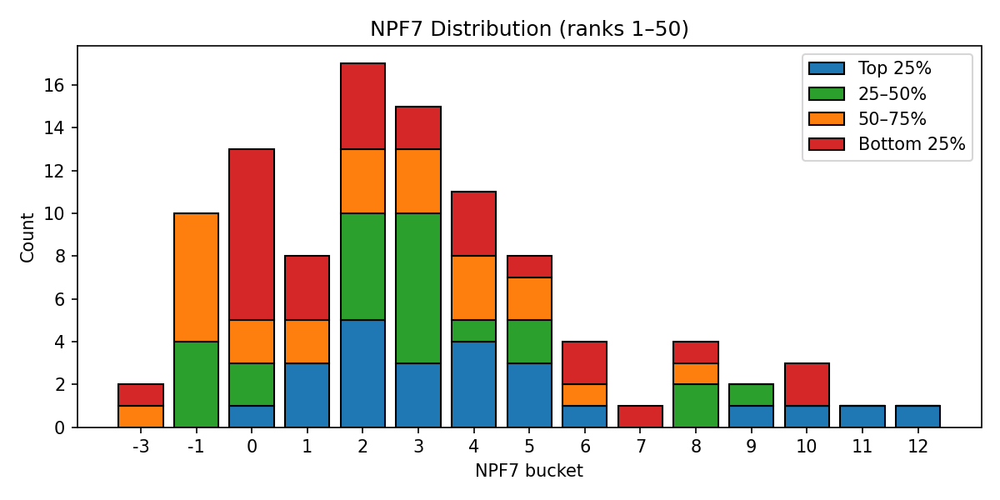
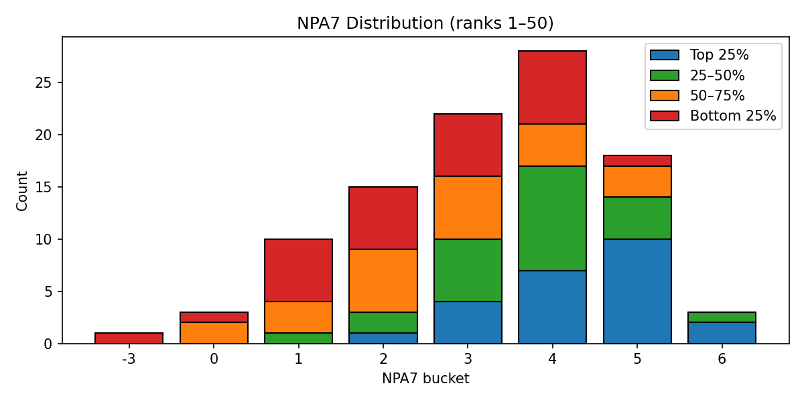
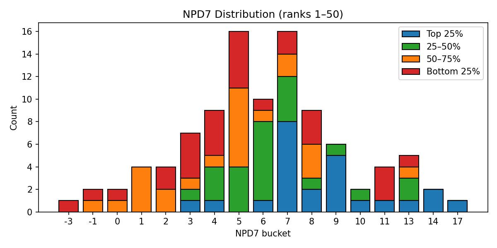
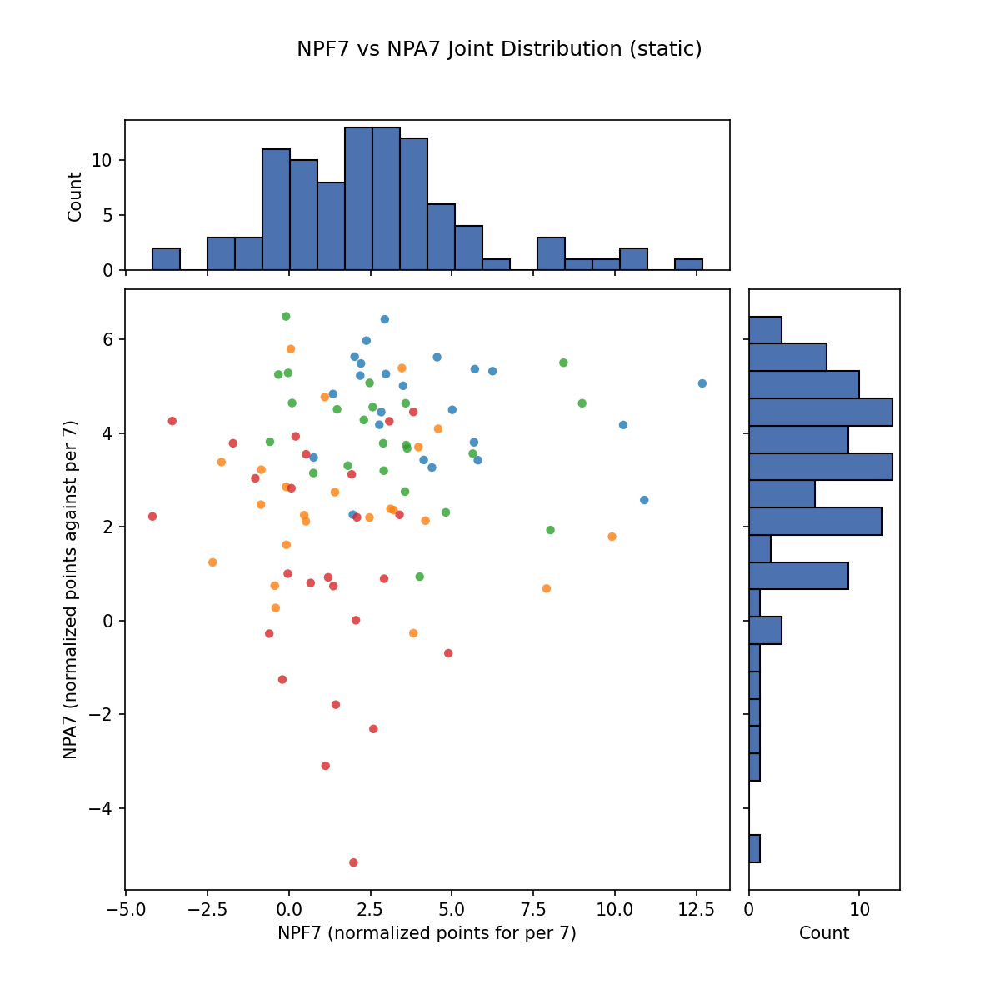

NPF7 / NPA7 / NPD7 — Season 2025, ranks 1–50
NPF7 Histogram

NPA7 Histogram

NPD7 Histogram

NPF7 vs NPA7 Joint Distribution (static)

NPF7 vs NPA7 Joint Distribution (interactive)
NPF7 Leaders
Top 10 NPF7
| # | Rank | Name | Team | NPF7 | Matches |
|---|
| 1 | 4 | Matt Ramos | Purdue | +12.68 | 30 |
| 2 | 2 | Drake Ayala | Iowa | +10.90 | 23 |
| 3 | 3 | Luke Lilledahl | Penn State | +10.26 | 24 |
| 4 | 34 | Takeo Davis | Gardner-Webb | +9.91 | 28 |
| 5 | 13 | Ben Davino | Ohio State | +9.00 | 19 |
| 6 | 17 | Nasir Bailey | Little Rock | +8.43 | 22 |
| 7 | 18 | Anthony Noto | Lock Haven | +8.02 | 30 |
| 8 | 34 | Anthony Molton | Campbell | +7.90 | 20 |
| 9 | 1 | Vincent Robinson | NC State | +6.25 | 24 |
| 10 | 8 | Stevo Poulin | Northern Colorado | +5.80 | 26 |
Bottom 10 NPF7
| # | Rank | Name | Team | NPF7 | Matches |
|---|
| 1 | 22 | Antonio Lorenzo | Oklahoma | -0.58 | 26 |
| 2 | 50 | Noah Michaels | Rider | -0.60 | 17 |
| 3 | 32 | Marcello Milani | Cornell | -0.85 | 28 |
| 4 | 26 | Richard Castro-Sandoval | CSU Bakersfield | -0.86 | 25 |
| 5 | 47 | Robert Sagaris | LIU | -1.03 | 22 |
| 6 | 48 | Marcel Lopez | SIU Edwardsville | -1.71 | 26 |
| 7 | 28 | Tristan Daugherty | North Dakota State | -2.07 | 26 |
| 8 | 36 | Mack Mauger | Missouri | -2.34 | 17 |
| 9 | 49 | Ben Monn | George Mason | -3.58 | 29 |
| 10 | 41 | Colby McBride | Appalachian State | -4.19 | 16 |
NPA7 Leaders
Top 10 NPA7
| # | Rank | Name | Team | NPA7 | Matches |
|---|
| 1 | 23 | Tyler Wells | Minnesota | +6.49 | 22 |
| 2 | 1 | Lucas Byrd | Illinois | +6.42 | 23 |
| 3 | 7 | Connor McGonagle | Virginia Tech | +5.97 | 20 |
| 4 | 28 | Ethan Berginc | Army West Point | +5.79 | 28 |
| 5 | 7 | Caleb Smith | Nebraska | +5.63 | 29 |
| 6 | 6 | Sheldon Seymour | Lehigh | +5.62 | 26 |
| 7 | 17 | Nasir Bailey | Little Rock | +5.50 | 22 |
| 8 | 8 | Braxton Brown | Maryland | +5.48 | 28 |
| 9 | 27 | Tyler Ferrara | Cornell | +5.39 | 18 |
| 10 | 2 | Troy Spratley | Oklahoma State | +5.36 | 26 |
Bottom 10 NPA7
| # | Rank | Name | Team | NPA7 | Matches |
|---|
| 1 | 30 | Koda Holeman | Cal Poly | +0.27 | 26 |
| 2 | 47 | Gavin Caprella | Air Force | +0.01 | 28 |
| 3 | 27 | Keyveon Roller | Virginia | -0.27 | 21 |
| 4 | 50 | Noah Michaels | Rider | -0.28 | 17 |
| 5 | 42 | Dedrick Navarro | Northwestern | -0.70 | 28 |
| 6 | 45 | Davian Guanajuato | SIU Edwardsville | -1.26 | 17 |
| 7 | 44 | Ejiro Montoya | Franklin & Marshall | -1.79 | 19 |
| 8 | 43 | Jacob Macatangay | Purdue | -2.31 | 14 |
| 9 | 42 | Massey Odiotti | Northwestern | -3.09 | 24 |
| 10 | 48 | Jack Parker | Bellarmine | -5.16 | 24 |
NPD7 Leaders
Top 10 NPD7
| # | Rank | Name | Team | NPD7 | NPF7 | NPA7 | Off Matches | Def Matches |
|---|
| 1 | 4 | Matt Ramos | Purdue | +17.74 | +12.68 | +5.06 | 30 | 30 |
| 2 | 3 | Luke Lilledahl | Penn State | +14.43 | +10.26 | +4.17 | 24 | 24 |
| 3 | 17 | Nasir Bailey | Little Rock | +13.92 | +8.43 | +5.50 | 22 | 22 |
| 4 | 13 | Ben Davino | Ohio State | +13.63 | +9.00 | +4.64 | 19 | 19 |
| 5 | 2 | Drake Ayala | Iowa | +13.47 | +10.90 | +2.57 | 23 | 23 |
| 6 | 34 | Takeo Davis | Gardner-Webb | +11.70 | +9.91 | +1.79 | 28 | 28 |
| 7 | 1 | Vincent Robinson | NC State | +11.57 | +6.25 | +5.32 | 24 | 24 |
| 8 | 2 | Troy Spratley | Oklahoma State | +11.07 | +5.70 | +5.36 | 26 | 26 |
| 9 | 6 | Sheldon Seymour | Lehigh | +10.16 | +4.55 | +5.62 | 26 | 26 |
| 10 | 18 | Anthony Noto | Lock Haven | +9.95 | +8.02 | +1.93 | 30 | 30 |
Bottom 10 NPD7
| # | Rank | Name | Team | NPD7 | NPF7 | NPA7 | Off Matches | Def Matches |
|---|
| 1 | 29 | Caleb Weiand | Michigan State | +0.31 | -0.43 | +0.75 | 27 | 27 |
| 2 | 43 | Jacob Macatangay | Purdue | +0.29 | +2.60 | -2.31 | 14 | 14 |
| 3 | 30 | Koda Holeman | Cal Poly | -0.14 | -0.41 | +0.27 | 26 | 26 |
| 4 | 44 | Ejiro Montoya | Franklin & Marshall | -0.35 | +1.44 | -1.79 | 19 | 19 |
| 5 | 50 | Noah Michaels | Rider | -0.88 | -0.60 | -0.28 | 17 | 17 |
| 6 | 36 | Mack Mauger | Missouri | -1.10 | -2.34 | +1.24 | 17 | 17 |
| 7 | 45 | Davian Guanajuato | SIU Edwardsville | -1.46 | -0.20 | -1.26 | 17 | 17 |
| 8 | 41 | Colby McBride | Appalachian State | -1.97 | -4.19 | +2.22 | 16 | 16 |
| 9 | 42 | Massey Odiotti | Northwestern | -1.97 | +1.12 | -3.09 | 24 | 24 |
| 10 | 48 | Jack Parker | Bellarmine | -3.17 | +1.98 | -5.16 | 24 | 24 |